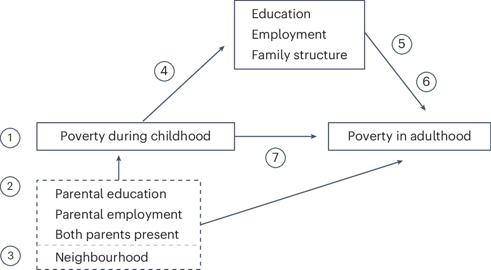

読書メモ：Parolin et al. (2024)
要約
イントロダクション
幼少期に貧困であった子どもは成人しても貧困になりやすいこと（貧困の世代間連鎖、IGPov）が知られている。幼少期に貧困であることは成人期以降の悪い健康状態や悪い教育のアウトカム、好ましくない経済的アウトカムと関連していることが知られている。にもかかわらず、収入の分布全体における上方／下方移動と比較して、貧困への／からの移動に焦点は当てられてこなかった。IGPovを研究している研究も単一の国でのみ検討されている、女性を除外している、不完全な収入の測定をしている、といった点で問題があった。
本稿では統合パネルデータを用いて、5つの先進国（アメリカ、英国、オーストラリア、ドイツ、デンマーク）におけるIGPovの程度および根幹にあるメカニズムを調査する。具体的には、(1) 出身階層、(2) 成人期の教育・雇用・家族形成（そしてそれらをさらに(2a)ベンチマークの達成（幼少期の貧困がと成人期の各種ベンチマークとの関連）、および(2b)ベンチマーク・リターン（これらのベンチマークにたいするリターン）に分解する）、(3)制度（税金と移転の効果）、(4)残差に分解する。
IGPovのメカニズムの概念枠組み

Source: Parolin et al. (2024), Figure4より引用
家族の経済的資源と投資：子どもにより多くのお金もしくは多くの時間をかけるほど、より望ましい発達上のアウトカムに結びつく（Figure 1 の①）
家族の学歴・雇用：親の学歴や雇用状況は、家族の経済的資源が同じであったとしても、選好や特性、消費様式、子育てのやり方(parenting)を通じて影響を与える。Figure 1 の②に相当する。
地域：不利が集積している地域で過ごすことは負のアウトカムと関連している。米国以外ではそこまで強くないが、依然として地域差がIGPovと関連しているかどうかは不明であり、検証の余地がある。Figure 1 の③に相当。
成人期の教育・雇用・家族形成｜ベンチマークの達成：幼少期の貧困と成人期の教育・雇用・家族形成との関連の強さ。ここで、ベンチマークとは成人期における測定可能なマイルストーンのことで、貧困に陥る可能性の低下と関連することが多い。雇用や家族形成を取り上げているが、とくに教育が重要である。Figure 1 の④に相当。
成人期の教育・雇用・家族形成｜ベンチマークのリターン：成人期の教育・雇用・家族形成と成人期の貧困との関連の強さ。やはり教育が勤労収入との関係として中心的な役割を果たすが、組織労働力(organized labor)が強く、最低賃金が高い国では教育の重要度は小さくなり、やはり国による違いが重要となる。少ない労働時間は少ない世帯収入と関連する。教育は同類婚をもたらし、教育の効果を増幅させる。Figure 1 の⑤に相当。
税金と移転：税金と移転が失業者の貧困の可能性を減少させるとき、社会的リスクに対して効果的に保険をかけ、異なる勤労収入へのリターンとの関連を減少させる。北欧諸国は所得移転を通じて貧困を削減する傾向が強いが、米国は英国に比べても遅れている。本稿で用いるデータセットでは収入の税引き前と税引後の額がそれぞれわかるので、税金と移転の効果を推定することができる。Figure 1 の⑥に相当。
残差：これまでの要因で説明できない部分。資産、非認知的特性などにくわえて、ヘルスケアへのアクセス、学校の質、金融機関へのアクセスの差、金融リテラシーの差、子育て規範、文化的特質などの制度要因として、残差に影響を与える。Figure 1 の⑦に相当。
データと方法
Cross-National Equivalent File (CNEF)を用い、アメリカ、英国、オーストラリア、ドイツ、デンマークのデータを統合した。デンマークの行政データを用いてセレクションの問題などに対応する。
| 国 | データ | 調査年 | 最終サンプル |
|---|---|---|---|
| 米国 | PSID | 1982-2019 | 9561 |
| 英国 | BHPS / UKHLS | 2002-2017 | 962 |
| オーストラリア | HILDA | 2013-2020 | 1563 |
| ドイツ | SOEP | 1996-2016 | 1708 |
| デンマーク | Statistics Denmark | 1980-2019 | 1801813 |
分析サンプルは幼少期の情報が少なくとも5年以上あり、25歳以降の情報が1年以上ある者。
測定
青年期の貧困：25歳から35歳までの平均貧困率
幼少期の貧困：出生から17歳までの平均貧困率
貧困：その国・その年の税引後・移転後等価世帯所得の50％をしきい値とし、それを下回ると貧困
媒介要因：(1) 高校修了ダミー、(2) 高校より上への進学ダミー、(3) ひとり親ダミー、(4) 週労働30時間以上、(5) 被雇用ダミー、(6) 結婚／partneredダミー、(7) 配偶者の学歴高校より上ダミー、(8) 世帯にほかに労働者がいるダミー
推定戦略
はじめに成人期の貧困と幼少期の貧困の相関関係を式\(\ref{eq:1}\)より求める。ここで、\(\text{Pov}\)は青年期の貧困、\(\text{ChPov}\)は幼少期の貧困、\(\text{Post}\)は税引後の収入であること、\(\beta_1\)は相関係数、\(\epsilon\)は誤差項をそれぞれ示している。
\[ \text{Pov}_\text{Post} = \beta_1 \text{ChPov} + \epsilon \tag{1}\label{eq:1} \]
成人期の貧困と幼少期の貧困との結びつきの強さを示す\(\beta_1\)を出身階層\(F\)、成人期の教育・雇用・家族\(M\)、税金と移転\(T\)、残差\(R\)から式\(\ref{eq:2}\)のように分解する。
\[ \beta_1 = \text{IGPov} = F + M + T + R \tag{2}\label{eq:2} \]
\(F\)は家族要因を含めないモデルの相関係数\(\rho_1\)と家族要因を含めたモデルの相関係数\(\delta_1\)の差として解釈される。式\(\ref{eq:5}\)のとおり。
\[ \text{Pov}_\text{Pre} = \rho_1 \text{ChPov} + \epsilon \tag{3}\label{eq:3} \]
\[ \text{Pov}_\text{Pre} = \delta_1 \text{ChPov} + \delta_2 \text{Fam} + \epsilon \tag{4}\label{eq:4} \]
\[ F = \rho_1 - \delta_1 \tag{5}\label{eq:5} \]
\(M\)は家族要因のみを含めたモデルの相関係数\(\delta_1\)と家族要因＋成人期の教育・雇用・家族も含めたモデルの相関係数\(\gamma_1\)の差として解釈される。式\(\ref{eq:7}\)のとおり。
\[ \text{Pov}_\text{Pre} = \gamma_1 \text{ChPov} + \gamma_2 \text{Fam} + \gamma_3 \text{Med} + \epsilon \tag{6}\label{eq:6} \]
\[ M = \delta_1 - \gamma_1 \tag{7}\label{eq:7} \]
\(T\)は何も投入しないモデルの税引き後と税引き前の差（\(\beta_1 - \rho_1\)）と家族要因＋成人期の教育・雇用・家族も含めたモデルの税引き後と税引き前の差（\(\theta_1 - \gamma_1\)）との差として解釈される。式\(\ref{eq:9}\)のとおり。
\[ \text{Pov}_\text{Post} = \theta_1 \text{ChPov} + \theta_2 \text{Fam} + \theta_3 \text{Med} + \epsilon \tag{8}\label{eq:8} \]
\(R\)は税引後の家族要因＋成人期の教育・雇用・家族も含めたモデルの\(F\)と\(M\)で説明されない相関係数（\(\theta_1 - \gamma_1\)）。式\(\ref{eq:10}\)のとおり。
\[ T = (\beta_1 - \rho_1) - (\theta_1 - \gamma_1) \tag{9}\label{eq:9} \]
\[ R = \theta_1 \tag{10}\label{eq:10} \]
結果
IGPovは米国で最も多く、デンマークでもっとも少ない。とくに米国では幼少期の貧困と成人期の貧困の関連が強く、幼少期の貧困がない時の成人期の貧困割合がもっとも小さくなる。
出身階層の寄与はオーストラリアで最も大きく、ドイツで最も小さい。
成人期のアウトカムは労働関連の要因が寄与が最も大きい。
ドイツとデンマークはともにIGPovが小さい国だが、小ささのメカニズムは大きく異なる
ドイツは成人期のアウトカムがほとんど説明し、出身階層や税金と移転、残差がほとんど説明しない
デンマークは出身階層と税金と移転が実質的な役割を持つもののオフセットしあい、成人期のアウトカムおよび誤差はほとんど説明しない
オーストラリアは出身階層／成人期のアウトカムともに大きく、それを税金と移転が引き下げる
- 英国もほとんど同様であるが、税金と移転が引き下げる程度がより大きい
米国は税金と移転の程度がかなり小さく、残差が説明する程度が最も大きい
議論
なぜデンマークで出身階層の寄与が大きいのか
- 経済的機会の平等化をより強力に推進する労働市場の制度、子育て支援、高等教育への無料アクセス、国民皆保険などがあるため
米国の残差はなにか
補足的分析により、資産、持ち家、組合メンバーシップ、健康、収監経験ではないことがわかった
推測として、質の良いヘルスケアへのアクセスなどが挙げられる
本稿の貢献は競合するメカニズムの分解にある。後続の研究では国内の地理的・時間的変化について研究することが望ましいだろう。